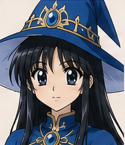

24 tiles cropped from the four character sheets in references/. Grid origin
926, 61 · stride 193, 222 · 3 columns × 2 rows ·
tile 181×210. This page is the verification route from task T37: a crop
that drifts renders half a face, throws nothing, logs nothing, and passes every other test.
The only way to catch it is to look.

The painted lavender/cream ground is baked into the source sheet. Dropped straight onto dark navy chrome it reads as a mistake.
A 2px gold frame turns the background into a deliberate portrait mount — which is what the source sheet does. Free, and it reads as a character dossier.
Hairline border, cropped to the face. Alpha matting soft anime edges is real image work that nobody budgeted, so it was cut (Phase 3 #10).